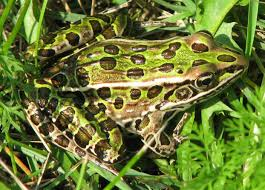

(백엔드 애들이 받아올 사용자 아이디)님 로그아웃
Reptile Test

Q7. 표범개구리의 특징이 아닌 것은?
1.
달팽이와 개미를 먹는다.
2. 수명이 최대 3년이다.
3. 피부에 있는 반점들이 표범 무늬와 닮아 표범개구리라는 이름이 붙었다.
4. 6월에 번식을 한다.
2. 수명이 최대 3년이다.
3. 피부에 있는 반점들이 표범 무늬와 닮아 표범개구리라는 이름이 붙었다.
4. 6월에 번식을 한다.